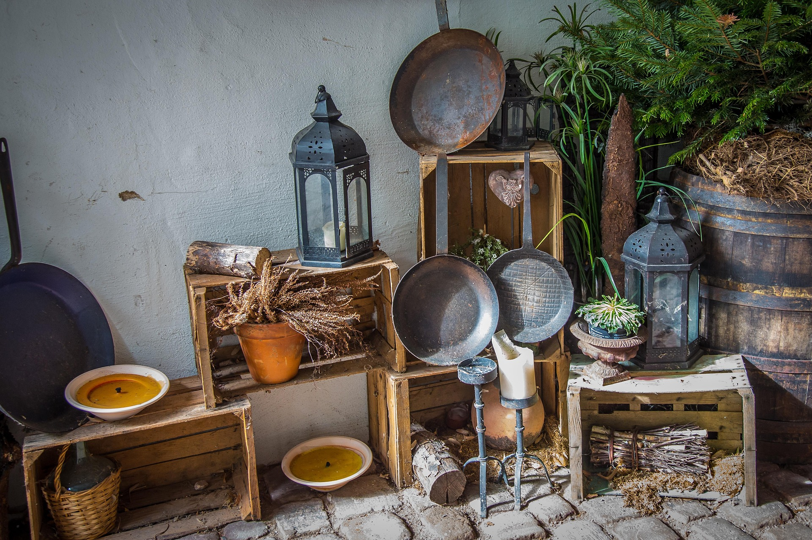

ハードパンについて
ABOUT
当店のパン作りは、朝一番の粉の温度を測ることから始まります。
使用するのは、私たちが信頼する農家さんから届く国産小麦と、創業時から大切に育ててきた自家製酵母。
派手さはありませんが、飽きのこない、嘘のないパン作りを続けています。

01
自家製酵母
季節ごとに表情を変える自家製酵母。じっくり時間をかけて育てることで、市販の酵母では出せない奥行きのある香りと、ほのかな酸味を引き出します。噛むほどに広がる風味をお楽しみください。

02
石窯での直火焼き
特注の石窯を使い、直火で一気に焼き上げます。遠赤外線効果によって、外側はバリッと香ばしく、内側には水分を閉じ込めて「もっちり」とした質感に。これこそがハード系パンの醍醐味です。

03
国産小麦の選定
日本各地の農家から直接届く小麦。その年、その時期に最も美味しい品種を厳選し、パンの種類に合わせて配合を変えています。保存料は一切使わず、素材本来の「力強い甘み」を追求しています。
イートインスペース
Eat-in Space

焼きたてのパンをその場でお楽しみいただける、
開放的なカフェスペースをご用意しております。
こだわりの自家焙煎コーヒーとともに、
ゆったりとしたひとときをお過ごしください。
- ランチタイム
- 11:30 — 14:30 (L.O. 14:00)
- 利用可能時間
- 08:00 — 18:00
- 座席数
- 24席（カウンター 8席 / テーブル 16席）
- 備考
- 無料Wi-Fi完備 / コンセント利用可（カウンター席のみ）
会社概要
Company Overview
- 会社名
- 株式会社 Gemini Bakery
- 設立
- 2010年4月
- 代表者
- 代表取締役 山田 太郎
- 事業内容
- 製パンの製造・販売、カフェ運営、自家焙煎コーヒーの卸売